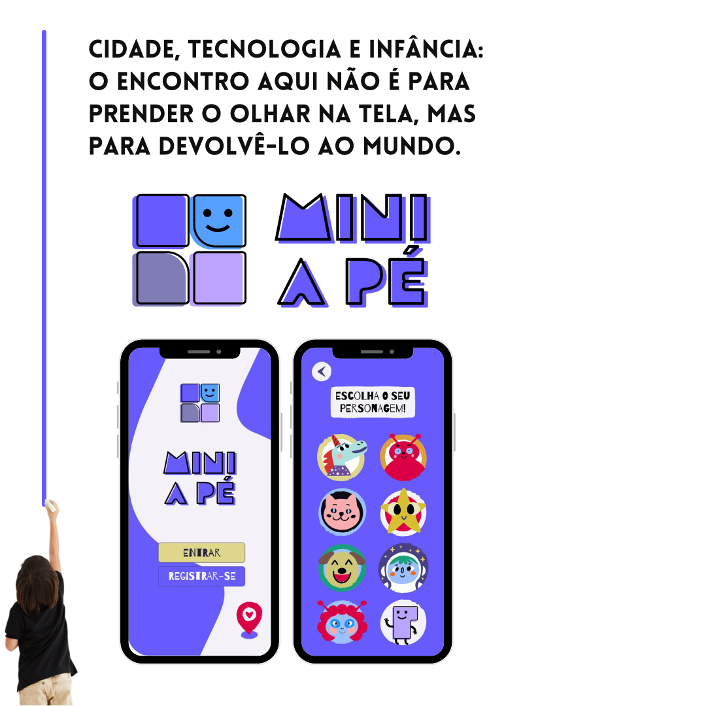
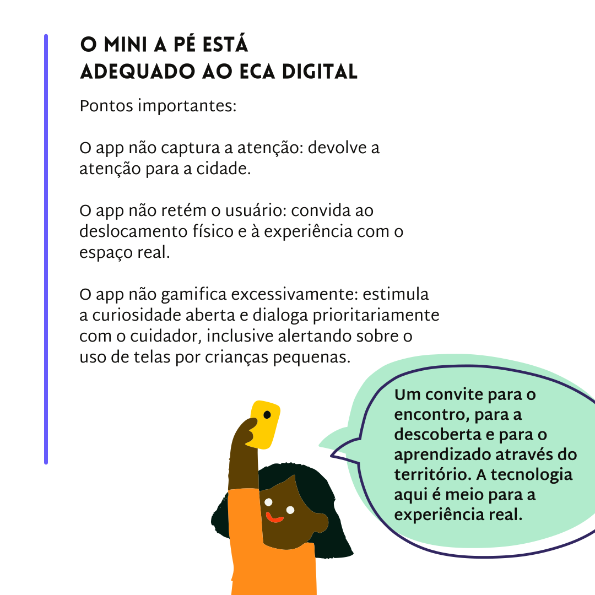
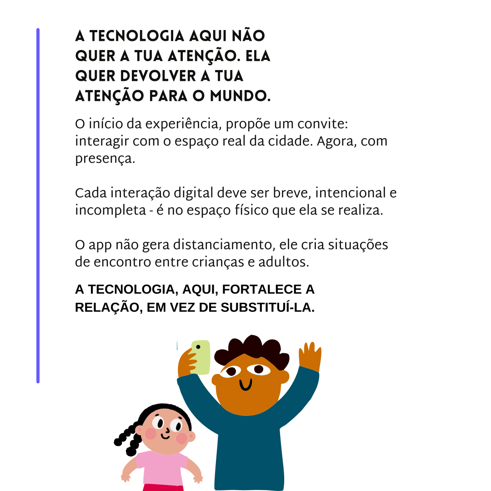

Um convite para viver a cidade com presença e afeto.
O Mini a Pé conecta adultos e infâncias aos espaços reais de Porto Alegre através de percursos que despertam o olhar, a conversa e o pertencimento.







Percursos desenhados para cada etapa da infância.
Desde explorações sensoriais e contato com a arte para os menores, até grandes descobertas históricas e culturais para crianças em idade escolar.
O mapa de Porto Alegre transformado em tabuleiro.
Caminhe, desbloqueie pontos de interesse por aproximação via GPS e conquiste selos educativos até se tornar um verdadeiro Guardião de Porto Alegre.


Tecnologia segura que devolve a atenção ao mundo real.
Em rigorosa conformidade com a LGPD e o ECA Digital. Uma plataforma livre de exposição social, com GPS sob controle e gerida 100% por adultos.
Quem Faz Acontecer
O Mini a Pé é fruto da união de iniciativas focadas em ressignificar a vivência urbana e o desenvolvimento infantil em Porto Alegre.

Tudo o que você precisa saber sobre o app.
Respostas diretas e transparentes sobre a segurança dos dados, o funcionamento dos percursos e como aproveitar a experiência.
O Mini a Pé é um guia de percursos lúdicos e educativos ao ar livre por Porto Alegre. Nosso objetivo é tirar as crianças das telas e aproximar as famílias dos espaços físicos, transformando caminhadas comuns em uma jornada interativa de descoberta, história, afeto e pertencimento.
O aplicativo é 100% gratuito e oferece dois formatos de exploração para se adaptar à sua família:
• Roteirinho (0 a 6 anos): Desenvolvido para a primeira infância, focado em estímulos sensoriais, contato com a natureza e movimento.
• Roteiros (crianças em idade escolar): Jornadas repletas de história, cultura e desafios lúdicos que são liberados via GPS por aproximação física de cada ponto.
Sim, a segurança da sua família é prioridade máxima. O Mini a Pé atua em rigorosa conformidade com a LGPD e o ECA Digital:
• O aplicativo deve ser gerido exclusivamente por um adulto maior de 18 anos.
• O perfil da criança utiliza apenas avatares e apelidos fictícios para garantir o total anonimato.
• A plataforma é totalmente livre de chats, modos multiplayer ou rankings competitivos que exponham as crianças.
De acordo com nossa Política de Privacidade, a localização é ativada apenas quando o aplicativo está em uso na tela, servindo exclusivamente para liberar o conteúdo e os desafios dos roteiros por aproximação real de cada ponto. Não há qualquer tipo de rastreamento em segundo plano e não armazenamos o histórico de geolocalização.
Em conformidade com nossos Termos de Uso, o adulto responsável tem controle total sobre os dados. Você pode editar suas informações diretamente no aplicativo. Caso deseje encerrar seu cadastro, é possível solicitar a remoção instantânea e definitiva da sua conta e de todos os dados associados diretamente pelas configurações do app ou acessando a página de Exclusão de Conta.